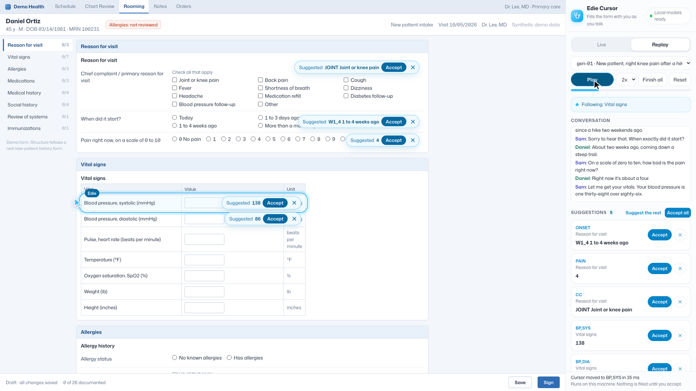
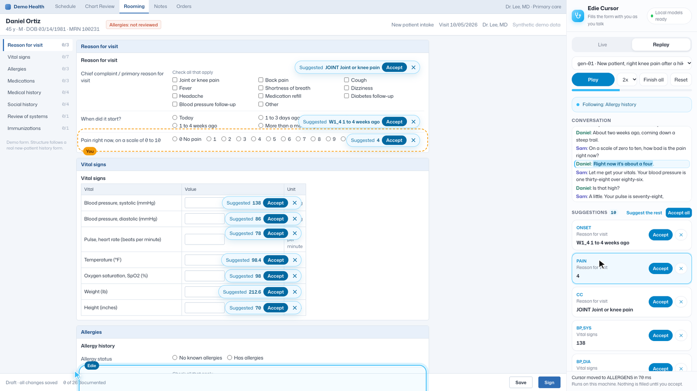
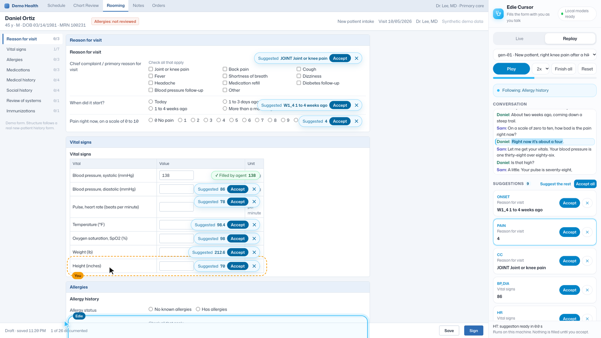
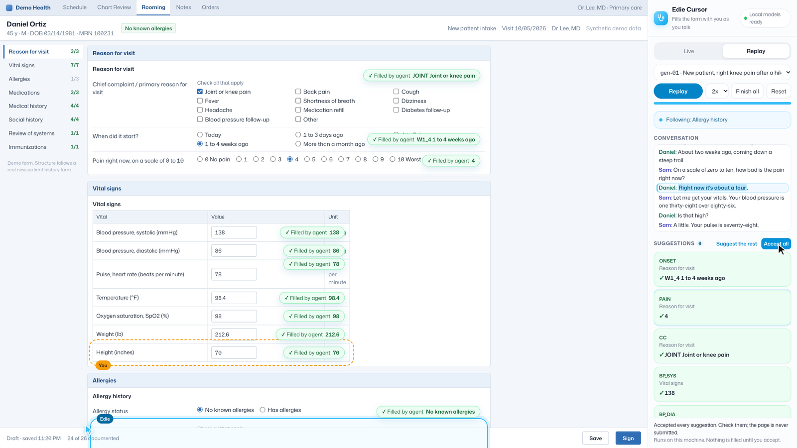

1She follows the conversation
As the visit goes on, Edie moves to the question being discussed and leaves her suggestion on it.
Edie is an AI cursor for clinical forms. She follows the conversation between a clinician and a patient, moves to the question being discussed, and suggests the answer with the exact words she heard. Nothing is filled until you accept it.
Prototype. Every visit shown here is made up, and Edie has not been tested with clinicians or real patients yet.
A made-up new patient visit, replayed at 2x on a laptop. The form is a mock EHR screen.
The problem
During a visit, the clinician has to follow the conversation and click through a form at the same time. A new patient intake has dozens of questions. A home health start of care assessment (OASIS) has many more, and each answer has to match an exact code.
So their eyes go to the screen instead of the patient, or the form gets finished after the visit. AI scribes can draft a note, but a form is different. Every checkbox and code still has to be right, and someone has to check each one.
The idea: an AI assistant that works through a cursor, right on the form, so the clinician can always see and check what it does.
The solution
Two cursors share the screen. Edie follows the conversation, and your own cursor can point at any question.

As the visit goes on, Edie moves to the question being discussed and leaves her suggestion on it.

Click a suggestion and the conversation scrolls to the exact line it came from, with the words marked.

Click any question with your own cursor and Edie answers just that one.

Accept suggestions one at a time or all at once. Edie never fills a field on her own and never submits the form.
Under the hood
No API keys. The conversation is processed on the machine and is never sent anywhere.
Turns speech into text in Live mode. About 1.6 GB, on Apple silicon with MLX.
Matches each sentence of the conversation to the questions on the page, so Edie knows where to go.
Writes the suggestion and quotes its evidence. About 2.3 GB, on Apple silicon with MLX.
Where it stands
Edie works end to end on replayed visits for both forms. Live mode with a microphone is built, but it has had much less testing than replay. Every visit in the demo is made up, and she has not been used with clinicians or real patient audio. She is not a medical device.